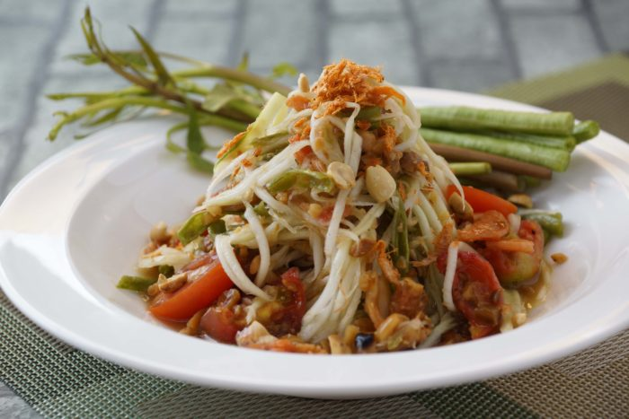
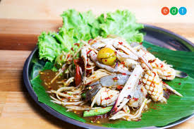
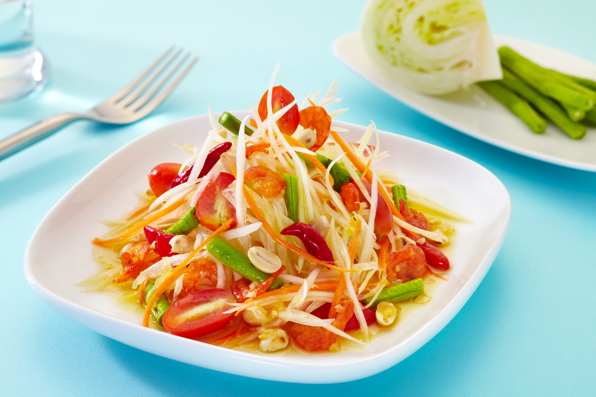
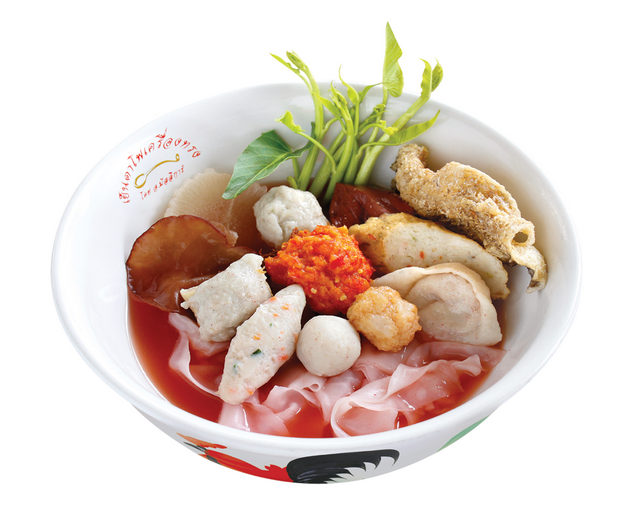
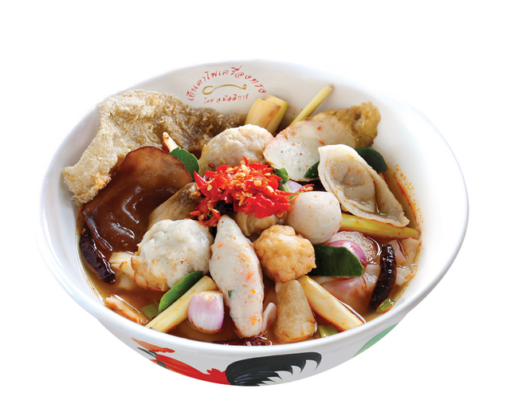
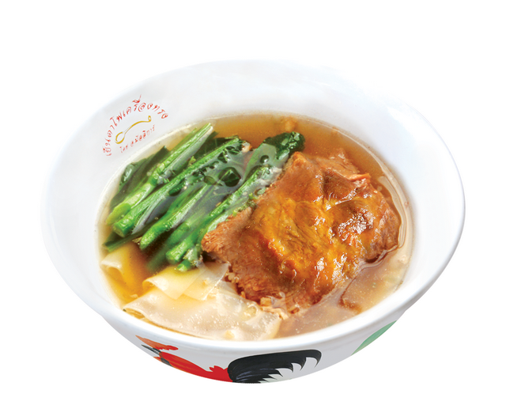
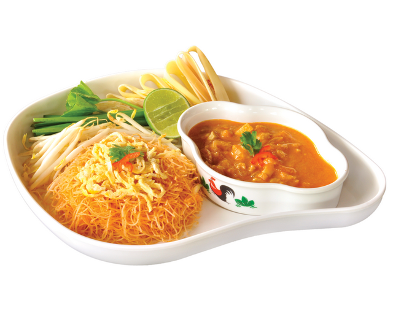
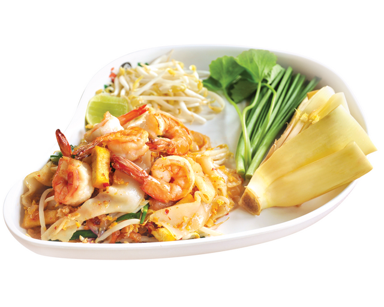

พัฒนพงศ์ ครุษาศาสตร์สกุล
ชื่อ: พัฒนพงศ์ ครุษาศาสตร์สกุล
ชื่อเล่น: พิพัฒ
คติ:อาวุธไม่ได้ฆ่าคน คนต่างหากที่ฆ่าคน
| อาหารที่ชอบ |
สีที่ชอบ |
กีฬาที่ชอบ |
| ส้มตำ |
ดำ |
ปิงปอง |
| ก๋วยเตียว |
แดง |
เทนนิส |
| ยำ |
เหลือง |
เปตอง |
- ส้มตำ
- ของกินชนิดหนึ่งใช้มะละกอดิบ เป็นต้น สับหรือขูดให้เป็นเส้นเล็ก ๆ แล้วเคล้ากับเครื่องปรุงที่โขลกละเอียด มี พริก กระเทียม มะนาวกุ้งแห้งปูเค็ม เป็นต้น มีรสเปรี้ยวหวาน, บางถิ่นเรียกว่า ตำส้ม
- ก๋วยเตี๋ยว
- ชื่ออาหารคาวชนิดหนึ่ง ทำด้วยแป้งข้าวเจ้าเป็นเส้น ๆ นำมาลวกสุกแล้วปรุงกับเครื่องต่าง ๆ เรียกชื่อตามลักษณะการปรุง หรือเครื่องปรุงหลักที่ใส่
- ยำ
- วิธีปรุงกับข้าวแบบหนึ่งที่เคล้าส่วนผสมหลายอย่างเข้าด้วยกัน.
- สีดำ
- เป็นสีของวัตถุที่ไม่สะท้อนแสงที่สเปกตรัมสะท้อนออกมา วัตถุสีดำจะดูดกลืนทุกสีในสเปกตรัม จึงไม่สะท้อนสีใด ๆ ออกมาเลย
- สีแดง
- สีมีความถี่ของแสงที่ต่ำที่สุด ที่ตามนุษย์สามารถแยกแยะได้ แสงสีแดงมีบริเวณช่วงคลื่นระหว่าง 630-760 นาโนเมตร
- สีเหลือง
- เป็น 1 ใน 3 แม่สี ร่วมกับสีแดง และสีน้ำเงิน โดยปกติสีจะมีอยู่สองโทน คือ สีโทนร้อน และ สีโทนเย็น
- ส้มตำ
- ก๋วยเตี๋ยว
- ยำ





